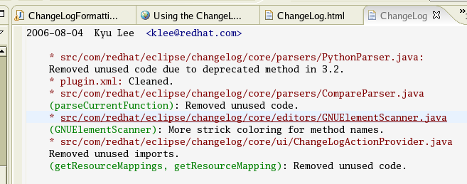

| ChangeLog Reference | ||
|---|---|---|
|
|
||
| Updating This Document | ||
The ChangeLog plug-in for Eclipse is a basic set of extensions to enable ChangeLog functionality for projects in Eclipse.
Before using the plug-in, you will want to set the ChangeLog preferences. These include your desired name and e-mail address to use in a ChangeLog entry. The default entries will be your username and your username@hostname. If you set the environment variables: ECLIPSE_CHANGELOG_REALNAME and/or ECLIPSE_CHANGELOG_EMAIL these will be used instead as your defaults.
To access the ChangeLog Preferences, click Window > Preferences > ChangeLog.

The screenshot above illustrates the preferences associated with the ChangeLog plug-in. The effect of each preference is described below.
' Author Name '
' Author Email '
' Formatter '
' Editor '
The plug-in has two functions:
Insert ChangeLog
One invokes the Insert ChangeLog function by selecting Edit -> ChangeLog Entry from the menubar. It can also be invoked via the keyboard shortcut Ctrl+Alt+C.

When clicked, the ChangeLog plug-in compiles an entry, the form of which depends on which formatter is set. The plug-in provides a GNU style formatter. There is an extension point by which other plug-ins may contribute alternate formatters.
Insert ChangeLog Entry will calculate the current function location in the active editor and generate the entry.
Prepare ChangeLog
Prepare ChangeLog will generate a full ChangeLog entry based upon local changes made in your workspace compared with the source control repository. This includes new files, removed files, and modifications. One invokes this feature by selecting Project -> Prepare ChangeLog from the menubar. It can also be invoked via the keyboard shortcut Ctrl+Alt+P. It will use the selected project or find the project for the file in the active editor or synchronization view.
Prepare ChangeLog will open up ChangeLog editor and insert entries. If there is no existing ChangeLog in the top-level project directory, you will be prompted for the location of one.

The ChangeLog plug-in also provides a special editor for ChangeLog files. This editor has syntax highlighting and provides a file-hyperlink feature. Inside the ChangeLog editor, if you hold the Ctrl key and click on a hyperlink the corresponding file will be opened.

If you invoke the key combination Ctrl+Alt+V, the changes made to the ChangeLog file since the last check-in to the repository will be copied to the clipboard. In most cases, this is the last entry unless you have performed other edits on the file. This is useful when you later perform a commit and wish to use the ChangeLog entry as the comment.
© Copyright Red Hat, Inc. 2009
© Copyright Phil Muldoon <pkmuldoon@picobot.org> 2006.
This documentation is licensed under the Eclipse Public License v. 1.0.
|
|
||
| Updating This Document |